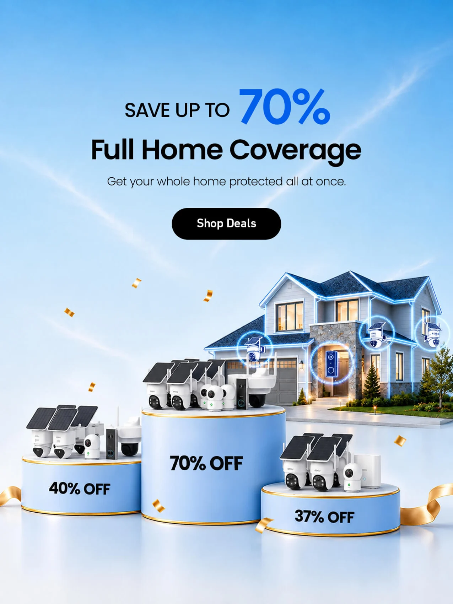
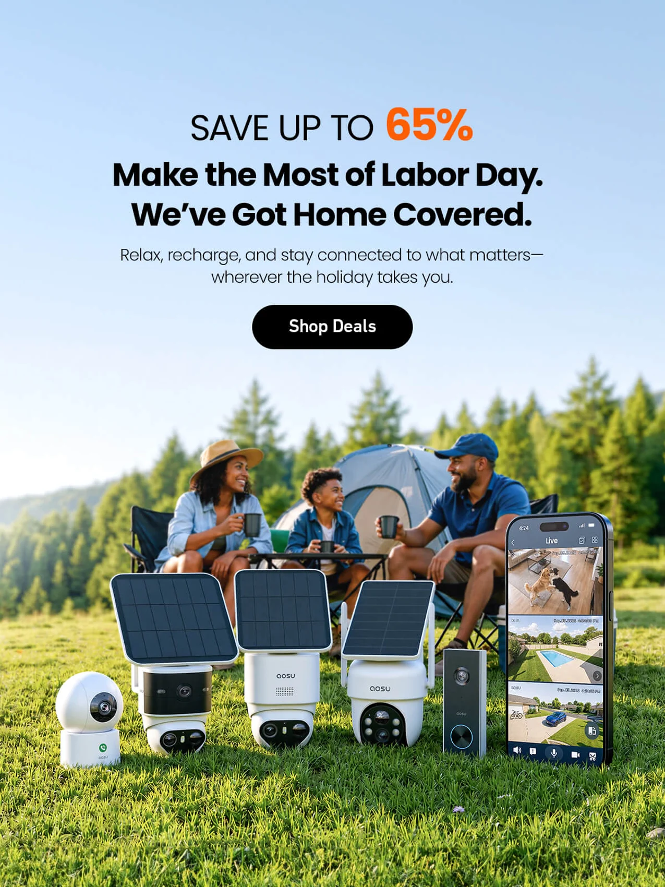
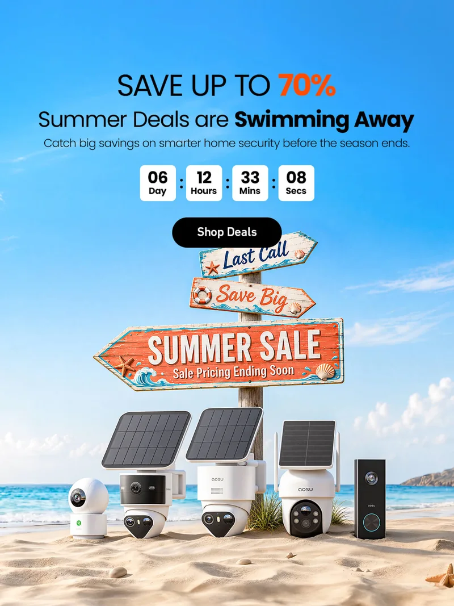

清晰的信息层级
核心主张、利益点、产品与行动入口各有位置，让注意力沿着明确的顺序移动。
A clear promise.One focused message.Product value / Context / Action
AOSU / BRAND & CAMPAIGN DESIGN
连接品牌识别、产品场景与营销触点，探索一套能够持续延展的视觉表达。
案例叙事预览 / 下方背景分析、设计判断和验证方案为待确认草稿；作品与任职信息沿用现有资料。
对于覆盖海外独立站、亚马逊与多种营销节点的家庭安防品牌，每张视觉都承担着即时沟通与长期品牌积累的双重任务。
本版先将核心命题设为：在多产品、多节点和多尺寸的输出中，如何同时保持品牌识别、讲清产品价值，并承接用户的购买兴趣。
品牌视角不同活动之间，哪些视觉线索值得持续保留？
用户视角从产品功能，到对家庭生活的意义，信息如何连接？
业务视角从广告点击到官网浏览，哪一步最需要设计介入？
这版先从现有作品提炼三条观察线索，作为讲述品牌化工作的结构；实际规范、制定过程及个人贡献，待你补充确认。
核心主张、利益点、产品与行动入口各有位置，让注意力沿着明确的顺序移动。
在多样的活动氛围中，保持产品外观清楚、主体突出，并让组合关系服务于信息重点。

用住宅、庭院与家庭情境解释安防价值，让用户看到产品在真实生活中的使用意义。



保留核心信息，
适应不同的观看方式。
围绕活动目标，先确定用户最值得关注的信息，再组织优惠、产品与行动入口。减少互相争夺注意力的内容，保留清楚的主次关系。
以“家庭安防”为核心语境，将摄像头、全屋覆盖等产品信息与居家、出行的使用情境联系起来。场景选择的具体依据，后续补充。
横版侧重快速建立完整关系，竖版依照上下阅读的节奏安排信息。保留主张与产品识别，调整空间分配、文字大小和视觉重心。


动态可以承担注意力引导、氛围建立与信息节奏的任务。它应围绕一个明确的表达目标展开，并让用户有机会看清关键内容。
用动态强化季节与场景的感受，为产品建立观看语境。
把变化组织在主体周围，让产品和核心信息保持可读。
控制运动与停留之间的关系，为主张和行动入口留下时间。
用户带着广告建立的期待进入官网。接下来的画面与信息，需要逐步回答“这是什么”“适不适合我”“为什么值得选择”。
本版用现有作品组织一条链路示意。它展示设计如何参与各阶段，后续将替换为同一活动的真实素材与验证记录。
用主张、产品与利益点吸引相关人群，观察不同创意的点击表现。
延续广告中的主题与核心信息，让用户快速确认自己到达了预期的页面。
通过场景、功能与细节组织产品信息，回应使用需求与购买疑虑。
让用户看懂权益与下一步入口，减少行动前的信息障碍。
结合素材与页面各阶段的实际表现，定位问题，再提出下一轮测试方向。
既有简历中记录了独立站业务与广告素材的表现。这些数据保留各自的原始语境，作为工作经历的佐证。
它们不作为上方某一个画面或单次活动的归因结果。具体项目的时间范围、测试过程与页面表现，后续再补充。
2025–2026 年负责独立站运营设计期间，对应业务的年度业绩完成率。
Facebook、Google 投放中，所设计广告图相比外包公司广告图的平均 ROI 表现。
同样以所设计广告图与外包公司广告图的表现作比较。